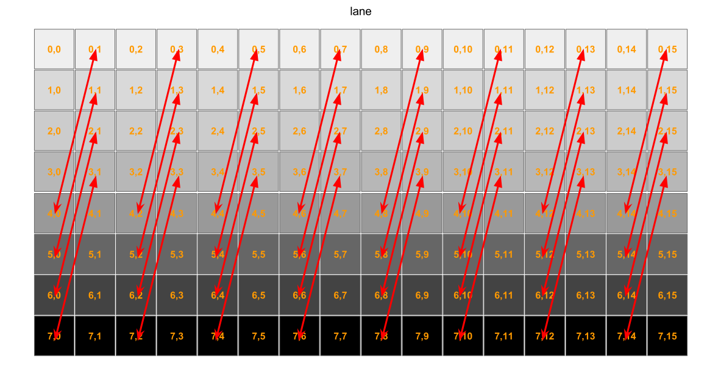
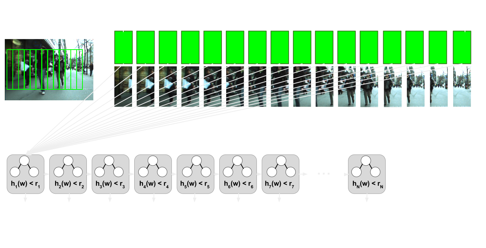
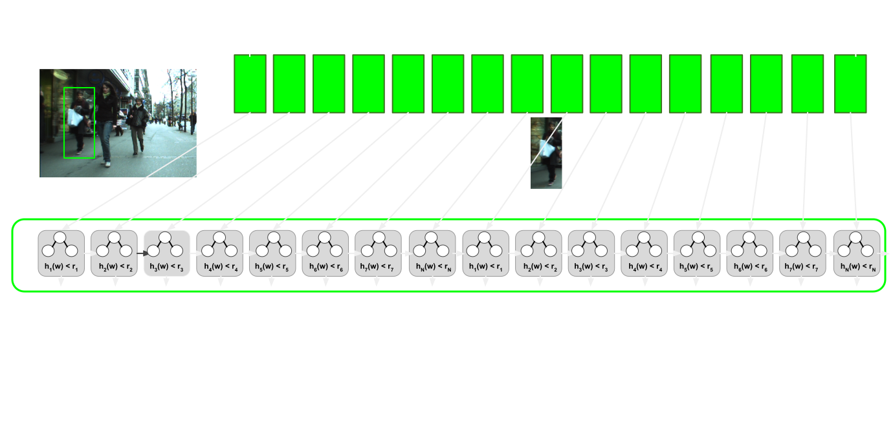
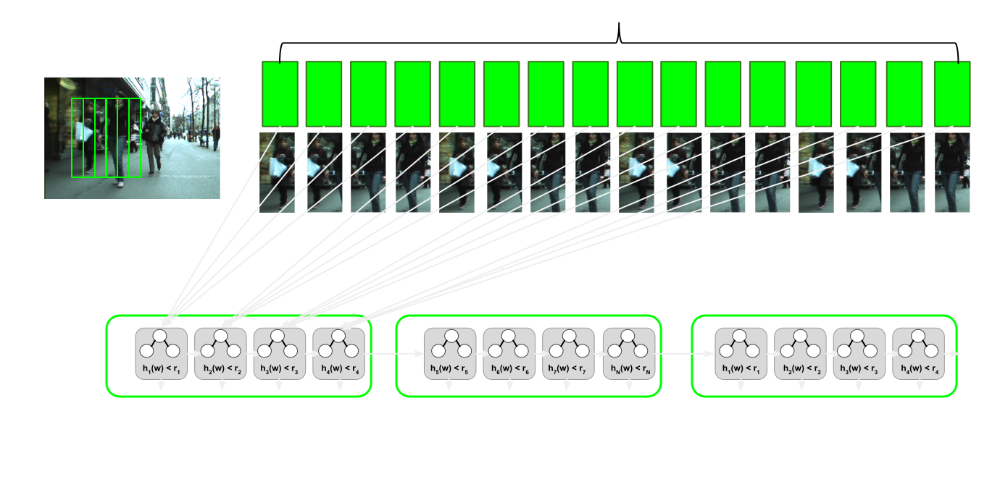

Code GPU with CUDA
Applying optimization techniques
Created by Marina Kolpakova ( cuda.geek ) for Itseez
previous
Outline
- Streaming kernels
- Threshold
- Transpose
- Reduction
- Optimizing control flow
Streaming kernels
Streaming kernel
template <typename Ptr2DIn, typename Ptr2DOut, typename Op>
__global__ void streaming(const Ptr2DIn src, Ptr2DOut dst)
{
const int x = blockDim.x * blockIdx.x + threadIdx.x;
const int y = blockDim.y * blockIdx.y + threadIdx.y;
if (x < dst.cols && y < dst.rows)
dst(y, x) = saturate_cast<Ptr2DOut::elem_type>(Op::apply(src(x, y)));
}dim3 block(block_x, block_y);
dim3 grid(roundUp(dst.cols, block_x), roundUp(dst.rows, block_y));
streaming<<<grid, block>>>(src, dst);General arithmetic and conversions, repack by map, resize, etc.
Threshold
Pixel per thread
__global__ threshold_bw(const DPtrb src, DPtrb dst, int32s cols, int32s rows, int8u thr)
{
const int x = blockDim.x * blockIdx.x + threadIdx.x;
const int y = blockDim.y * blockIdx.y + threadIdx.y;
if (x < cols && y < rows)
dst.row(y)[x] = max(thr, src.row(y)[x]);
}Adjusting launch parameters for specific hardware
Pixel per thread: results
| block size | GK107*, μs | X-factor | GM107**, μs | X-factor |
|---|---|---|---|---|
| 32x16 | 456.49 | 1.00 | 214.94 | 1.00 |
| 32x8 | 431.42 | 1.06 | 210.39 | 1.02 |
| 32x6 | 435.87 | 1.05 | 226.02 | 0.95 |
| 32x4 | 412.01 | 1.11 | 222.11 | 0.98 |
| 32x2 | 785.36 | 0.58 | 228.28 | 0.94 |
| 32x1 | 1516.19 | 0.30 | 419.94 | 0.51 |
** Time has been measured on 1080p input for GM107 with 5 SMX (0.5 GHz), 128-bit GDDR5
Kernel unrolling: image row per warp
__global__ threshold_bw(const DPtrb src, DPtrb dst, int32s cols, int32s rows, int8u thr)
{
int block_id = (blockIdx.y * gridDim.x + blockIdx.x) * (blockDim.x / warpSize);
int y = (threadIdx.y * blockDim.x + threadIdx.x) / warpSize + block_id;
if (y < rows)
for (int x = lane(); x < cols; x += warpSize)
dst.row(y)[x] = max(thr, src.row(y)[x]);
}| block size | GK107*, μs | X-factor | GM107**, μs | X-factor |
|---|---|---|---|---|
| blockwise 32x4 | 412.01 | 1.0 | 226.02 | 1.00 |
| warpwise 8 | 223.01 | 1.85 | 265.13 | 0.85 |
| warpwise 4 | 222.53 | 1.85 | 248.04 | 0.91 |
| warpwise 2 | 374.47 | 1.10 | 246.83 | 1.92 |
** Time has been measured on 1080p input for GM107 with 5 SMX (0.5 GHz), 128-bit GDDR5
Kernel unrolling: more independent elements
// same as previous
unsigned char tmp[2];
if (y * 2 < rows - 2)
for (int x = lane(); x < cols; x += warpSize)
{
tmp[0] = max(threshold, src.row(y * 2)[x]);
tmp[1] = max(threshold, src.row(y * 2+ 1)[x]);
dst.row(y * 2)[x] = tmp[0];
dst.row(y * 2 + 1)[x] = tmp[1];
}
else {/*compute tail*/ }| block size | GK107*, μs | X-factor | GM107**, μs | X-factor |
|---|---|---|---|---|
| blockwise 32x4 | 412.01 | 1.0 | 226.02 | 1.10 |
| warpwise 4 | 222.53 | 1.85 | 248.04 | 0.91 |
| warpwise 4 U2 | 185.28 | 2.22 | 269.75 | 0.83 |
** Time has been measured on 1080p input for GM107 with 5 SMX (0.5 GHz), 128-bit GDDR5
Kernel unrolling: use wider transactions
unsigned char -> unsigned integer
template<typename T> __device__ __forceinline__ T vmin_u8(T,T);
template<> __device__ __forceinline__ unsigned int vmin_u8(unsigned v, unsigned m)
{
unsigned int res = 0;
asm("vmax4.u32.u32.u32 %0, %1, %2, %3;" : "=r"(res) : "r"(v), "r"(m), "r"(0));
return res;
}// same as previous
if (y < rows)
for (int x = lane(); x < cols / sizeof(int8u); x += warpSize)
{
int32u tmp = src.row<unsigned int>(y)[x];
int32u res = vmin_u8(tmp, mask);
dst.row<unsigned int>(y)[x] = res;
}Wider transactions : results
| block size | GK107*, μs | X-factor | GM107**, μs | X-factor |
|---|---|---|---|---|
| blockwise 32x4 | 412.01 | 1.0 | 226.02 | 1.10 |
| warpwise 4 | 222.53 | 1.85 | 248.04 | 0.91 |
| warpwise 4 U2 | 185.28 | 2.22 | 269.75 | 0.83 |
| warpwise 2W | 126.01 | 3.27 | 245.21 | 0.92 |
| warpwise 2WU2 | 96.71 | 4.26 | 162.83 | 1.39 |
| warpwise 4W | 85.22 | 4.83 | 257.69 | 0.88 |
| warpwise 4WU2 | 83.42 | 4.93 | 161.18 | 1.40 |
** Time has been measured on 1080p input for GM107 with 5 SMX (0.5 GHz), 128-bit GDDR5
Transpose
template <typename T>__global__
void transposeNaive(const DPtr<T> idata, DPtr<T> odata, int cols, int rows)
{
int xIndex = blockIdx.x * blockDim.x + threadIdx.x;
int yIndex = blockIdx.y * blockDim.y + threadIdx.y;
odata.row(xIndex)[yIndex] = idata.row(yIndex)[xIndex];
}Coalesce memory access: smem usage
- Split the input matrix into tiles, assigning one thread block for one tile. Tile size (in elements) and block size (in threads) are not necessarily the same.
- Load tile in coalesced fashion to smem -> read from smem by column -> write to destination in coalesced fashion.
Coalesce memory access: smem usage code
template <typename T>__global__
void transposeCoalesced(const DPtr<T> idata, DPtr<T> odata, int cols, int rows)
{
__shared__ float tile[TRANSPOSE_TILE_DIM][TRANSPOSE_TILE_DIM];
int xIndex = blockIdx.x * TRANSPOSE_TILE_DIM + threadIdx.x;
int yIndex = blockIdx.y * TRANSPOSE_TILE_DIM + threadIdx.y;
for (int i = 0; i < TRANSPOSE_TILE_DIM; i += TRANSPOSE_BLOCK_ROWS)
tile[threadIdx.y + i][threadIdx.x] = idata.row(yIndex + i)[xIndex];
__syncthreads();
xIndex = blockIdx.y * TRANSPOSE_TILE_DIM + threadIdx.x;
yIndex = blockIdx.x * TRANSPOSE_TILE_DIM + threadIdx.y;
for (int i = 0; i < TRANSPOSE_TILE_DIM; i += TRANSPOSE_BLOCK_ROWS)
odata.row(yIndex + i)[xIndex] = tile[threadIdx.x][threadIdx.y + i];
}Smem accesses: avoid bank conflicts
template <typename T>__global__
void transposeCoalescedPlus1(const DPtr<T> idata, DPtr<T> odata, int cols, int rows)
{
__shared__ float tile[TRANSPOSE_TILE_DIM][TRANSPOSE_TILE_DIM + 1];
int xIndex = blockIdx.x * TRANSPOSE_TILE_DIM + threadIdx.x;
int yIndex = blockIdx.y * TRANSPOSE_TILE_DIM + threadIdx.y;
for (int i = 0; i < TRANSPOSE_TILE_DIM; i += TRANSPOSE_BLOCK_ROWS)
tile[threadIdx.y + i][threadIdx.x] = idata.row(yIndex + i)[xIndex];
__syncthreads();
xIndex = blockIdx.y * TRANSPOSE_TILE_DIM + threadIdx.x;
yIndex = blockIdx.x * TRANSPOSE_TILE_DIM + threadIdx.y;
for (int i = 0; i < TRANSPOSE_TILE_DIM; i += TRANSPOSE_BLOCK_ROWS)
odata.row(yIndex + i)[xIndex] = tile[threadIdx.x][threadIdx.y + i];
}Warp shuffle

Transpose shuffle
Transpose shuffle code
__global__ void transposeShuffle(
const DPtr32 idata, DPtr32 odata, int cols, int rows)
{
int xIndex = blockIdx.x * blockDim.x + threadIdx.x;
int yIndex = blockIdx.y * blockDim.y + threadIdx.y;
int yIndex1 = yIndex * SHUFFLE_ELEMENTS_VECTORS;
yIndex *= SHUFFLE_ELEMENTS_PERF_WARP;
int4 reg0, reg1;
reg0.x = idata.row(yIndex + 0)[xIndex]; reg0.y = idata.row(yIndex + 1)[xIndex];
reg0.z = idata.row(yIndex + 2)[xIndex]; reg0.w = idata.row(yIndex + 3)[xIndex];
reg1.x = idata.row(yIndex + 4)[xIndex]; reg1.y = idata.row(yIndex + 5)[xIndex];
reg1.z = idata.row(yIndex + 6)[xIndex]; reg1.w = idata.row(yIndex + 7)[xIndex];
continued on the next slide...
Transpose shuffle code (cont.)
unsigned int isEven = laneIsEven();
int4 target = isEven ? reg1 : reg0;
target.x = __shfl_xor(target.x, 1);
target.y = __shfl_xor(target.y, 1);
target.z = __shfl_xor(target.z, 1);
target.w = __shfl_xor(target.w, 1);
const int oIndexY = blockIdx.x * blockDim.x + (threadIdx.x >> 1) * 2;
const int oIndexX = yIndex1 + (isEven == 0);
if (isEven) reg1 = target; else reg0 = target;
odata(oIndexY + 0, oIndexX, reg0);
odata(oIndexY + 1, oIndexX, reg1);
} Results
| approach / time, ms | GK107* | GK20A** | GM107*** |
|---|---|---|---|
| Copy | 0.486 | 2.182 | 0.658 |
| CopySharedMem | 0.494 | 2.198 | 0.623 |
| CopySharedMemPlus1 | 0.500 | 2.188 | 0.691 |
| TransposeCoalescedPlus1 | 0.569 | 2.345 | 0.631 |
| TransposeCoalesced | 0.808 | 3.274 | 0.771 |
| TransposeShuffle | 1.253 | 2.352 | 0.689 |
| TransposeNaive | 1.470 | 5.338 | 1.614 |
| TransposeNaiveBlock | 1.735 | 5.477 | 1.451 |
** Time has been measured on 1080p input for GK20A with 1 SMX (0.6 GHz)
*** Time has been measured on 1080p input for GM107 with 5 SMX (0.5 GHz), 128-bit GDDR5
when use kernel fusion?
- Batch of small kernels
- competitive solution for kernel unrolling since it improves instruction per byte ratio
- Append one or more small kernels to register-heavy kernel
- might affect kernel unrolling factors or launch parameters
Reduction
Reduction
__global__ void reduceNaive(const int *idata, int *odata, size_t N )
{
int partial = 0;
size_t i = blockIdx.x * blockDim.x + threadIdx.x;
for ( ; i < N; i += blockDim.x * gridDim.x )
partial += idata[i];
atomicAdd( odata, partial );
}
Naive implementation with CUDA atomics is limited by write queue atomic throughput,
therefore hierarchical approaches are used:
- Grid level: meta reduction approach
- Block level: block reduction approach
Meta reduction approaches
- Tree
- divide array of N elements by factor b (block size). Problem size grows with N. Number of blocks used:
- 2-level
- Use constant number of blocks C. Each block processes N/C elements. Problem size independent form N, C is hardware dependent heuristic == block size b. Number of blocks used:
- Constant & atomic
- one level of reduction, fixed number of blocks C. Each block performs block-wide reduction and stores results to gmem using atomic write.
Block reduction approaches
Ranking
__global__ void reduceRanking(const int *idata, int *odata, size_t N )
{
extern __shared__ int* partials;
int thread_partial = thread_reduce(idata, N);
partials[threadIdx.x] = sum;
__syncthreads();
if (threadIdx.x < 512) partials[threadIdx.x] += partials[threadIdx.x + 512];
__syncthreads();
if (threadIdx.x < 256) partials[threadIdx.x] += partials[threadIdx.x + 256];
__syncthreads();
if (threadIdx.x < 128) partials[threadIdx.x] += partials[threadIdx.x + 128];
__syncthreads();
if (threadIdx.x < 64) partials[threadIdx.x] += partials[threadIdx.x + 64];
__syncthreads();
if (threadIdx.x < 32) warp_reduce(partials);
if (!threadIdx.x) odata[blockIdx.x] = partials[0];
}
Warp reduce
template<int SIZE>
__device__ __forceinline__ void warp_reduce(int val, volatile int* smem)
{
#pragma unroll
for (int offset = SIZE >> 1; offset >= 1 ; offset >>= 1 )
val += __shfl_xor( val, offset );
int warpId = warp::id();
int laneId = warp::lane();
if (!laneId) smem[warpId] = val;
}warp-centric reduction
__global__ void reduceWarpCentric(const int *idata, int *odata, size_t N )
{
__shared__ int partials[WARP_SIZE];
int thread_partial = thread_reduce(idata, N);
warp_reduce<WARP_SIZE>(thread_partial, partials);
__syncthreads();
if (!warp::id())
warp_reduce<NUM_WARPS_IN_BLOCK>(partials[threadIdx.x], partials);
if (!threadIdx.x) odata[blockIdx.x] = partials[0];
}Results
| approach | Block | transaction, bit | bandwidth*, GB/s |
|---|---|---|---|
| warp-centric | 32 | 32 | 32.58 |
| warp-centric | 128 | 32 | 56.07 |
| warp-centric | 256 | 32 | 56.32 |
| warp-centric | 32 | 128 | 44.22 |
| warp-centric | 128 | 128 | 56.10 |
| warp-centric | 256 | 128 | 56.74 |
| ranking | 32 | 32 | 32.32 |
| ranking | 128 | 32 | 55.16 |
| ranking | 256 | 32 | 55.36 |
| ranking | 32 | 128 | 44.00 |
| ranking | 128 | 128 | 56.56 |
| ranking | 256 | 128 | 57.12 |
Optimizing
Control flow
Sliding window detector
function isPedestrain(x)
d ← 0
for t = 1...T do
d ← d + C(x)
if d < rt then
return false
end if
end for
return true
end function
Thread per window
Thread per window: analysis
- Coalesced access to gmem in the beginning
- Sparse access to the latest stages
- Unbalanced workload. Time of block residence on SM is
T(b) = max{T(w_0) , ..., T(w_blok_size) } - Warp processes 32 sequential window positions, so it likely diverge
Warp per window
Warp per window: analysis
- All lanes in a warp load different features. Access pattern is random
- Textures are used to amortize random pattern
- Work balanced for a warp. Warps in a block compute neighboring windows . Likelihood that block needs same number of features is hight
- Use warp-wide prefix sum for decision making.
for ( int offset = ExecutionPolicy::warp_pixels; offset < 32; offset *= 2)
{
asm volatile ( " { "
" .reg .f32 r0 ; "
" .reg .pred p ; "
" shfl.up.b32 r0|p , %0 , %1 , 0x0 ; "
" @p add.f32 r0 , r0 , %0; "
" mov . f32 %0 , r0 ; "
" } " : " +f " ( impact ) : "r" ( offset ) ) ;
}
Warp per N windows
Warp per N windows: analysis, N = 4
__device__ __forceinline__ static int pixel() { return threadIdx.x & 3; }
__device__ __forceinline__ static int stage() { return threadIdx.x >> 2; }- Each warp loads 8 features for 4 windows. Each feature consists of 4 pixels. Total warp transactions: 8x4 of 16 bytes (instead of 32x4 of 4 byte).
- Warp is active while at least one of window positions is active.
uint desision = (confidence + impact > trace[t]);
uint mask = __ballot(desision);
uint pattern = 0x11111111 << pixel;
if ( active && (__popc(mask & pattern) != 8)) active = 0;
if (__all(!active)) break;Results
| video sequence | thread /window, ms | warp /window, ms | warp /4 windows, ms | speedup w/w, X | speedup w/4w, X |
|---|---|---|---|---|---|
| seq06 | 169.13 | 98.29 | 27.13 | 1.72 | 6.23 |
| seq07 | 166.92 | 100.12 | 36.52 | 1.66 | 4.57 |
| seq08 | 172.89 | 98.12 | 38.87 | 1.76 | 4.44 |
| seq09 | 175.82 | 102.54 | 34.18 | 1.76 | 4.45 |
| seq10 | 144.13 | 96.87 | 32.40 | 1.71 | 5.14 |
Final words
- Use warp-wise approaches for memory bound kernels
- Minimize transactions with global memory
- Load only bytes needed
- Use hierarchical approaches for non parallelizeble codes
- Consider data dependency while optimizing complicated algorithms